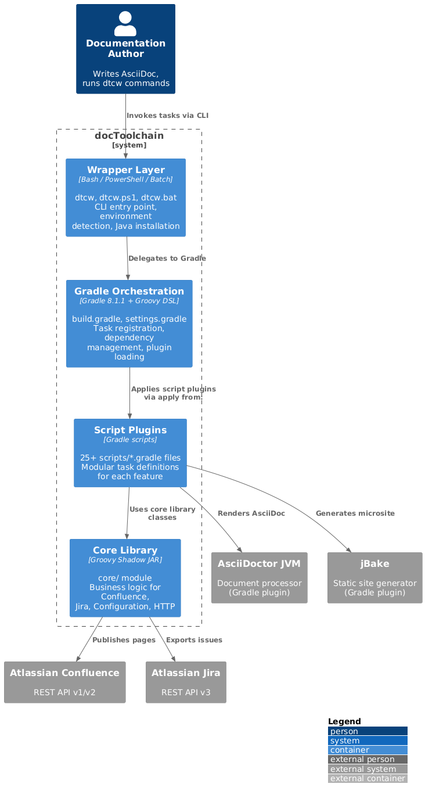
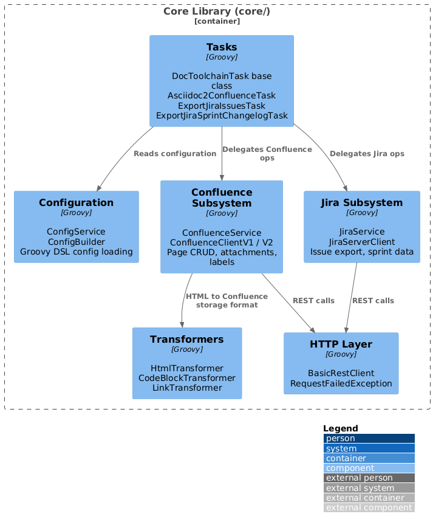
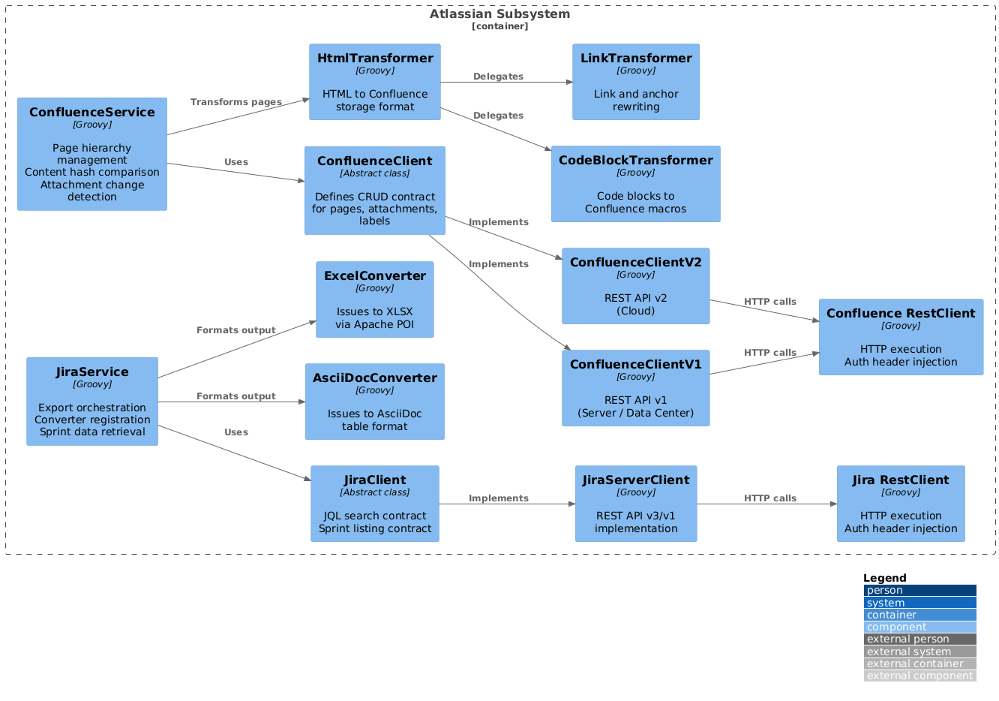
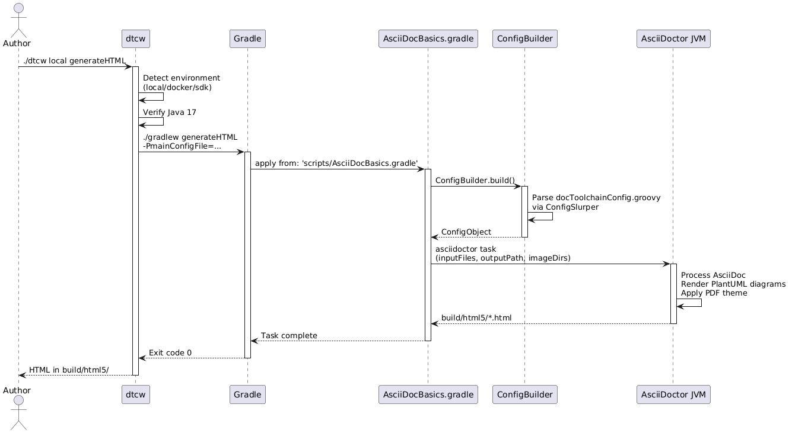
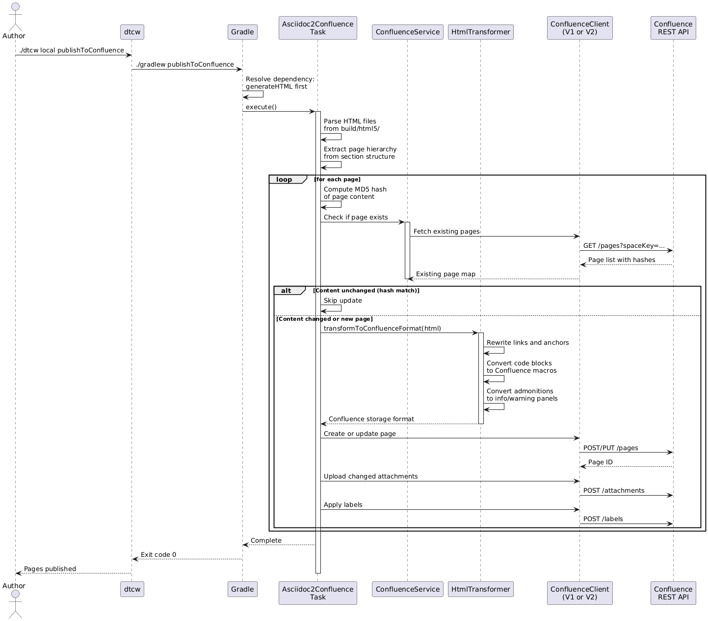
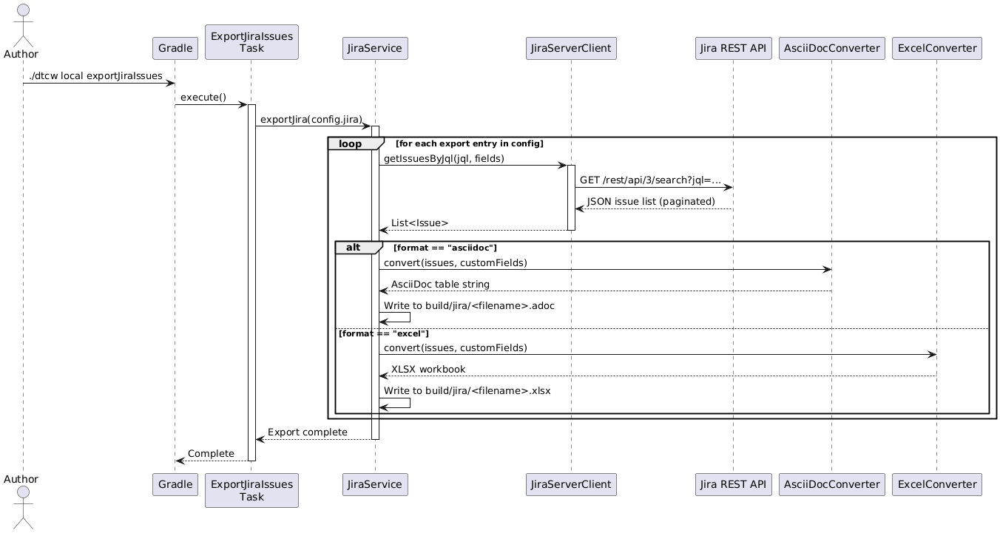
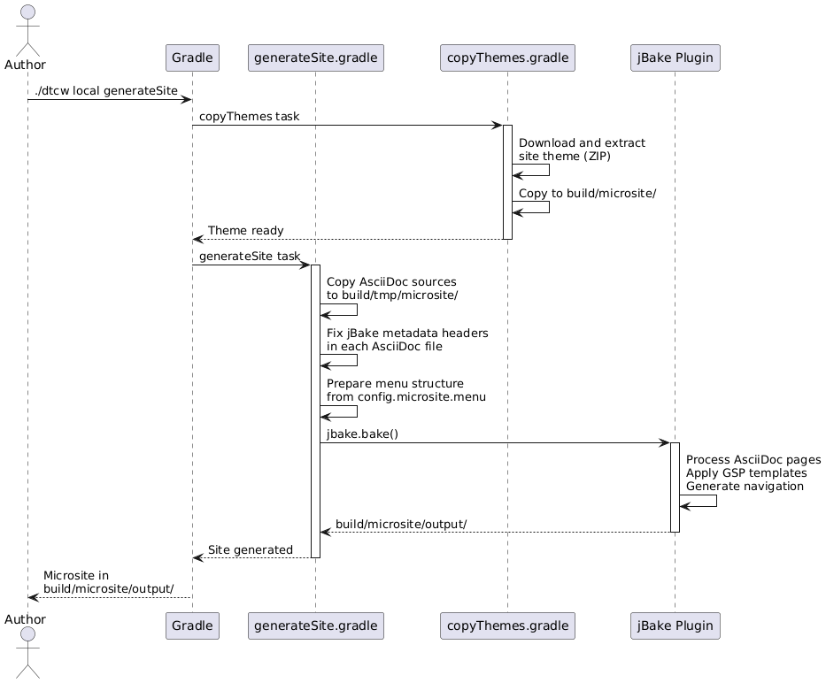
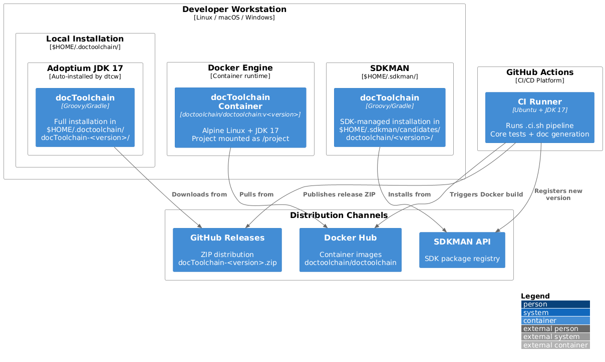
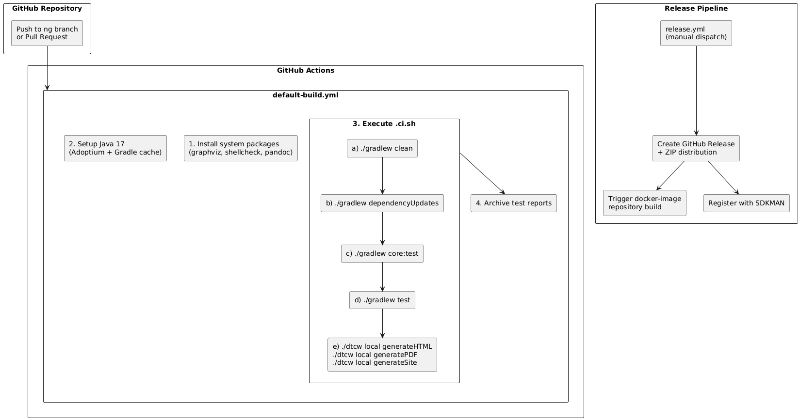

docToolchain Architecture Documentation
1. Introduction and Goals
docToolchain is an open-source implementation of the docs-as-code approach for software architecture documentation. It processes AsciiDoc source files and generates documentation in multiple output formats (HTML, PDF, DocBook, Reveal.js slides, microsites). Beyond format conversion, docToolchain integrates with external systems — Atlassian Confluence and Jira, Enterprise Architect, Structurizr, Excel, PowerPoint, and Visio — to import data into documentation or publish documentation to collaboration platforms.
1.1. Requirements Overview
The core functional requirements are:
-
Document generation: Convert AsciiDoc sources with embedded PlantUML diagrams to HTML, PDF, DocBook, and Reveal.js slides
-
Microsite generation: Build complete static documentation websites using jBake
-
Confluence publishing: Publish generated HTML pages to Atlassian Confluence, maintaining page hierarchies, attachments, and labels
-
Jira integration: Export Jira issues and sprint changelogs to AsciiDoc or Excel format for inclusion in documentation
-
External tool import: Extract diagrams from Enterprise Architect, Structurizr, Visio, and PowerPoint; import tables from Excel; convert Markdown to AsciiDoc
-
Git metadata extraction: Generate changelogs and contributor lists from Git history
-
Cross-platform CLI: Provide a single command-line interface (
dtcw) that works on Linux, macOS, and Windows -
Multiple execution environments: Support local installation, Docker containers, and SDKMAN-based installation
-
Zero-configuration start: Enable first-time users to generate documentation with minimal setup
1.2. Quality Goals
| Priority | Quality Goal | Scenario |
|---|---|---|
1 |
Extensibility |
A new export/import feature can be added by creating one Gradle script file in |
2 |
Cross-platform portability |
The same documentation project produces identical output on Linux, macOS, and Windows, regardless of whether execution uses local, Docker, or SDKMAN environments. |
3 |
Ease of adoption |
A developer with no prior docToolchain experience can generate HTML documentation in under 5 minutes using only the |
4 |
Docs-as-code integration |
Documentation sources live alongside application code in version control and are built automatically via CI/CD pipelines without interactive prompts. |
5 |
Modularity |
Features are independently loadable script plugins. Unused integrations (e.g., Jira, Confluence) add no overhead to projects that do not configure them. |
1.3. Stakeholders
| Role/Name | Contact | Expectations |
|---|---|---|
Documentation Author |
Technical writers and developers writing docs |
Simple CLI to generate and preview documentation in multiple formats. Seamless integration with their editor and version control workflow. |
Contributor / Developer |
Open-source contributors extending docToolchain |
Clear architecture, modular codebase, fast test feedback. Ability to add new features without understanding the entire system. |
DevOps Engineer |
CI/CD pipeline maintainers |
Headless execution mode, Docker support, predictable exit codes. No interactive prompts during automated builds. |
Project Maintainer |
Ralf D. Mueller and core team |
Sustainable architecture that supports community contributions. Backward compatibility for existing users. Clear separation between core logic and build system (see ADR-2). |
End User |
Readers of generated documentation |
Well-formatted, accessible output in HTML and PDF. Functional navigation in microsites. |
2. Architecture Constraints
2.1. Technical Constraints
| Constraint | Explanation |
|---|---|
Java 17 |
Exact major version required. The |
Groovy 3.0.13 |
Primary implementation language. Chosen for JVM compatibility and native Gradle integration (see ADR-1). All core logic and scripts are written in Groovy. |
Gradle 8.1.1 |
Build system and task orchestration framework. docToolchain is deeply integrated with Gradle’s task model, dependency resolution, and plugin ecosystem. The Gradle wrapper ( |
AsciiDoc format |
All documentation sources must be in AsciiDoc. This is a fundamental design decision — docToolchain is an AsciiDoc-first tool chain. Markdown sources can be converted via Pandoc as a preprocessing step. |
PlantUML + Graphviz |
Diagram rendering requires PlantUML (via |
Cross-platform support |
Must run on Linux, macOS, and Windows. This constrains the wrapper scripts (Bash, PowerShell, Batch) and prohibits platform-specific features in the core pipeline. Enterprise Architect and Visio export are exceptions — they require Windows COM automation. |
2.2. Organizational Constraints
| Constraint | Explanation |
|---|---|
MIT License |
Open-source license. All dependencies must be compatible. No proprietary libraries in the core distribution. |
Community-driven development |
Contributions come from volunteers. The architecture must be approachable for external contributors — clear module boundaries, documented conventions, and fast feedback loops. |
GitHub as development platform |
Source code, issues, pull requests, CI/CD, and releases are hosted on GitHub. The CI/CD pipeline uses GitHub Actions exclusively. |
Docs-as-code philosophy |
Documentation is treated as source code: version-controlled, peer-reviewed, and built automatically. This philosophy shapes both the product (what docToolchain does) and the project (how docToolchain itself is documented). |
2.3. Conventions
| Convention | Explanation |
|---|---|
Architecture Decision Records |
Significant architecture decisions are documented as ADRs in |
Groovy as scripting language |
ADR-1 mandates Groovy as the primary scripting language. Exception: Visual Basic scripts for Windows COM automation (Enterprise Architect, PowerPoint export). |
Semantic Versioning |
Project follows SemVer. Current development version: 4.0.0 (in |
Spock testing framework |
Unit tests use the Spock framework (2.3-groovy-3.0) with JUnit 5 runner. Integration tests use BATS (Bash Automated Testing System) for wrapper script testing. |
Conventional configuration |
Project configuration uses a Groovy DSL file ( |
3. Context and Scope
docToolchain sits between documentation authors and their audiences. Authors write AsciiDoc sources in a version-controlled repository; docToolchain processes these sources and delivers the output to readers — as HTML files, PDFs, microsites, or Confluence wiki pages. Along the way it pulls data from external systems (Jira, Enterprise Architect, Git) to enrich the documentation.
3.1. Business Context
| Communication Partner | Input to docToolchain | Output from docToolchain |
|---|---|---|
Documentation Author |
AsciiDoc source files, configuration ( |
Generated HTML, PDF, DocBook, Reveal.js slides, microsite |
Atlassian Confluence |
— |
HTML pages with attachments, hierarchical page structure, labels |
Atlassian Jira |
Issues (via JQL queries), sprint data, custom fields |
— |
Enterprise Architect |
UML diagrams (via COM automation) |
— |
Git Repository |
Commit history, contributor metadata |
— |
Structurizr |
Architecture model (DSL files) |
— |
Excel / PowerPoint / Visio |
Spreadsheet tables, slide images, diagram images |
— |
3.2. Technical Context
| External System | Protocol / Interface | Configuration |
|---|---|---|
Atlassian Confluence |
REST API v1 (Server/Data Center) or v2 (Cloud). HTTPS with Basic Auth or Bearer Token. |
|
Atlassian Jira |
REST API v3 (Cloud) or v1 (Server, via |
|
Enterprise Architect |
COM automation via VBScript. Reads |
|
Structurizr |
File-based. Parses Structurizr DSL files, renders to PlantUML via |
|
Git |
Local CLI ( |
|
Excel / PowerPoint / Visio |
File-based. Apache POI for Excel ( |
|
AsciiDoctor JVM |
Java library (Gradle plugin |
|
jBake |
Java library (Gradle plugin |
|
Pandoc |
External CLI tool. Converts between document formats (Markdown to AsciiDoc, DOCX to AsciiDoc). |
|
4. Solution Strategy
The following table maps each quality goal to the architectural approach that achieves it and the supporting architecture decision(s).
| Quality Goal | Architectural Approach | Rationale | ADR |
|---|---|---|---|
Extensibility |
Script Plugin Architecture. Each feature is a standalone |
Adding a feature requires exactly one script + one class. No framework coupling, no registration beyond |
ADR-1, ADR-2 |
Cross-platform portability |
Wrapper script abstraction. The |
Users interact with a single command regardless of OS. Docker guarantees identical build environments across platforms. |
— |
Ease of adoption |
Convention over configuration. Default |
Zero prerequisites beyond a shell. First run bootstraps everything. |
ADR-TBD-3 |
Docs-as-code integration |
AsciiDoctor as document processor. AsciiDoc sources are processed by AsciiDoctor JVM (4.0.4) with inline PlantUML rendering. Output is deterministic and reproducible. |
AsciiDoc is the de facto standard for docs-as-code. AsciiDoctor JVM runs as a Gradle plugin — no external tool installation. |
ADR-1 |
Modularity |
Core module isolation (ADR-2). Business logic in |
Decoupling from Gradle enables faster tests, IDE support, and future non-Gradle usage. Each script plugin is independently removable. |
ADR-2, ADR-TBD-4 |
4.1. Key Technology Decisions
| Technology | Decision Rationale |
|---|---|
Groovy 3.0.13 |
JVM language with native Gradle integration. 95% Java-compatible, enabling reuse of the Java ecosystem. Scripting-friendly syntax reduces boilerplate. (ADR-1) |
Gradle 8.1.1 |
Provides task dependency management, incremental builds, and a rich plugin ecosystem. The |
AsciiDoctor JVM 4.0.4 |
Java-native AsciiDoc processor. Runs as a Gradle plugin without external dependencies. Supports PDF, HTML5, DocBook output. Extensible via |
jBake 5.5.0 |
Groovy-native static site generator. Chosen over Antora for its simplicity and direct Gradle plugin integration. Uses Groovy Server Pages (GSP) for templates. |
Apache HttpClient 5.3 |
Modern HTTP client for REST API calls to Confluence and Jira. Replaces legacy HttpBuilder. Supports connection pooling, proxies, and modern TLS. |
Spock 2.3 |
Groovy testing framework with expressive BDD-style specifications. Integrates with JUnit 5 runner. Chosen for natural fit with the Groovy codebase. |
5. Building Block View
This section decomposes docToolchain into its static building blocks at three levels of detail.
5.1. Level 1: Whitebox Overall System

- Motivation
-
docToolchain’s four-layer architecture separates concerns cleanly: the wrapper handles platform abstraction, Gradle provides build orchestration, script plugins define features, and the core library contains reusable business logic.
- Contained Building Blocks
| Building Block | Responsibility | Location |
|---|---|---|
Wrapper Layer |
Cross-platform CLI entry point. Detects execution environment (local/Docker/SDKMAN), manages Java 17 installation, invokes Gradle with correct arguments. |
|
Gradle Orchestration |
Build configuration, task registration via |
|
Script Plugins |
Feature-specific Gradle task definitions. Each script is a self-contained module that registers tasks in the |
|
Core Library |
Business logic independent of Gradle. Provides services for Confluence publishing, Jira export, configuration management, and HTTP communication. Packaged as a Shadow JAR. |
|
5.2. Level 2: Whitebox Core Module

5.2.1. Tasks
-
Purpose: Gradle task implementations. Each task class encapsulates the logic for one docToolchain operation.
-
Key classes:
DocToolchainTask(abstract base),Asciidoc2ConfluenceTask,ExportJiraIssuesTask,ExportJiraSprintChangelogTask,VerifyConfluenceApiAccessTask,WipeConfluenceSpaceTask -
Location:
core/src/main/groovy/org/docToolchain/tasks/
5.2.2. Configuration
-
Purpose: Load and provide typed access to project configuration.
-
Key classes:
ConfigBuilder(bootstraps ConfigObject from Groovy DSL file),ConfigService(providesgetConfigProperty(path)andgetFlatConfigSubTree(path)) -
Location:
core/src/main/groovy/org/docToolchain/configuration/
5.2.3. Confluence Subsystem
-
Purpose: Publish HTML documentation to Confluence. Handles page creation/update, attachment upload, label management, and content hash comparison for idempotent publishing.
-
Key classes:
ConfluenceService,ConfluenceClient(abstract),ConfluenceClientV1,ConfluenceClientV2,RestClient -
Location:
core/src/main/groovy/org/docToolchain/atlassian/confluence/
5.2.4. Jira Subsystem
-
Purpose: Export Jira issues and sprint data to AsciiDoc or Excel format.
-
Key classes:
JiraService,JiraClient(abstract),JiraServerClient,AsciiDocConverter,ExcelConverter,LegacyJiraProcessor -
Location:
core/src/main/groovy/org/docToolchain/atlassian/jira/
5.2.5. HTTP Layer
-
Purpose: Generic HTTP client abstraction for REST API calls. Handles authentication, error responses, and proxy configuration.
-
Key classes:
BasicRestClient,RequestFailedException -
Location:
core/src/main/groovy/org/docToolchain/http/
5.2.6. Transformers
-
Purpose: Transform HTML output from AsciiDoctor into Confluence storage format. Handles code blocks, links, anchors, admonitions, and embedded images.
-
Key classes:
HtmlTransformer,CodeBlockTransformer,LinkTransformer -
Location:
core/src/main/groovy/org/docToolchain/atlassian/transformer/
5.3. Level 2: Script Plugin Categories
The 25+ script plugins are organized into six functional groups:
| Category | Scripts | Purpose |
|---|---|---|
Document Generation |
|
Core document generation: |
Atlassian Integration |
|
Confluence publishing and Jira data export. These scripts delegate to core module task classes. |
External Tool Export |
|
Extract diagrams and models from Enterprise Architect, PowerPoint, Visio, Structurizr DSL, and OpenAPI specs. |
Data Import/Export |
|
Import data from Excel tables, convert Markdown, extract Git metadata, compute documentation metrics, and run Pandoc conversions. |
Site Generation |
|
Generate static microsites using jBake. Handle theme management, content preparation, and jBake configuration. |
Utilities |
|
Supporting tasks: aggregate AsciiDoc includes, fix file encodings, validate HTML output, download arc42 templates, and user-defined custom tasks. |
5.4. Level 3: Whitebox Atlassian Subsystem

5.4.1. Confluence Publishing Flow
The Confluence subsystem implements a smart publishing pattern:
-
ConfluenceServiceparses generated HTML files using jsoup -
For each page, it computes an MD5 hash of the content
-
It queries Confluence for existing pages in the target space
-
If a page exists and its hash matches, the update is skipped (QS-4)
-
If content changed,
HtmlTransformerconverts HTML to Confluence storage format -
ConfluenceClient(V1 or V2, based on config) creates or updates the page -
Attachments are uploaded only if their content changed
-
Labels are applied or updated
5.4.2. Jira Export Flow
The Jira subsystem implements a converter chain pattern:
-
JiraServicereceives export configuration (JQL queries, output format, custom fields) -
JiraServerClientexecutes JQL queries via REST API, handling pagination -
For each export entry, the configured converter is invoked:
-
AsciiDocConverter: Formats issues as AsciiDoc tables with configurable columns -
ExcelConverter: Creates XLSX workbooks via Apache POI with one sheet per export
-
-
LegacyJiraProcessorhandles backward-compatible configuration format from older docToolchain versions
6. Runtime View
The following scenarios illustrate how docToolchain’s building blocks interact at runtime for the most architecturally significant use cases.
6.1. Scenario 1: Generate HTML Documentation
The most common user workflow: converting AsciiDoc sources to HTML.

Notable aspects:
-
dtcwnever calls AsciiDoctor directly — all tool invocation is delegated through Gradle’s task dependency graph. -
Configuration is loaded once by
ConfigBuilderand shared across all tasks in the build. -
PlantUML diagrams are rendered inline by the
asciidoctorj-diagramextension during AsciiDoc processing.
6.2. Scenario 2: Publish to Confluence
The publishing flow demonstrates the Confluence subsystem’s smart update mechanism (QS-4).

Notable aspects:
-
The task automatically depends on
generateHTML— Gradle resolves this before publishing. -
MD5 hash comparison prevents unnecessary Confluence page version creation.
-
HtmlTransformerchains throughCodeBlockTransformerandLinkTransformerfor format conversion. -
Client selection (V1 vs V2) is determined by the
confluence.useV1Apiconfiguration flag.
6.3. Scenario 3: Export Jira Issues
Demonstrates the converter chain pattern for exporting Jira data.

Notable aspects:
-
Each export entry in the configuration defines its own JQL query, output format, and custom fields.
-
The
LegacyJiraProcessoris invoked first to convert old-style configuration (iqlproperty) to the modernexportsarray format. -
Pagination is handled internally by
JiraServerClient— callers receive the full issue list.
6.4. Scenario 4: Generate Microsite
Demonstrates jBake-based static site generation.

Notable aspects:
-
Theme management is a separate task (
copyThemes) that runs before site generation. -
AsciiDoc files require jBake-specific metadata headers (
:jbake-title:,:jbake-type:, etc.) which are automatically fixed during preparation. -
The site uses Groovy Server Pages (GSP) templates from
src/site/templates/.
7. Deployment View
docToolchain supports three execution environments and is distributed through multiple channels.
The dtcw wrapper abstracts environment differences so that users interact with a single CLI regardless of the underlying installation method.
7.1. Infrastructure Level 1: Execution Environments

- Motivation
-
Supporting three execution environments maximizes adoption across different developer setups and CI/CD platforms. Local installation offers the fastest feedback loop. Docker provides reproducible builds without any local tool installation. SDKMAN integrates with the JVM ecosystem’s standard package manager.
- Quality and/or Performance Features
| Environment | Advantages | Limitations | Typical Use |
|---|---|---|---|
Local |
Fastest startup (~13s for HTML). Direct filesystem access. Full Gradle caching. |
Requires Java 17 on the host (auto-installed by dtcw). |
Daily development, documentation preview |
Docker |
No local dependencies beyond Docker. Guaranteed consistent environment across machines (QS-2). |
Slower I/O due to volume mounts. No Gradle daemon persistence between runs. |
CI/CD pipelines, team standardization |
SDKMAN |
Familiar JVM ecosystem tooling. Version switching ( |
Requires SDKMAN installation. Limited to Unix-like systems. |
JVM developers, multi-version testing |
- Mapping of Building Blocks to Infrastructure
| Building Block | Infrastructure Mapping |
|---|---|
Wrapper Layer ( |
Runs directly on the host shell. Detects available environments and delegates accordingly. In Docker mode, it constructs the |
Gradle Orchestration |
Runs inside the JVM (local or container). Uses |
Core Library |
Distributed as |
Script Plugins |
Located in the |
7.2. Infrastructure Level 2: CI/CD Pipeline

The CI pipeline (default-build.yml) runs on every push to the ng branch and on pull requests.
It installs system dependencies, runs the full test suite, and generates documentation.
The release pipeline (release.yml) is triggered manually and creates a GitHub Release with a ZIP distribution, triggers Docker image builds in the docker-image repository, and registers the new version with SDKMAN.
8. Cross-cutting Concepts
8.1. Configuration Management
docToolchain uses a three-layer configuration model:
| Layer | Source | Precedence |
|---|---|---|
Build-time defaults |
|
Lowest. Provides defaults that rarely change. |
Project configuration |
|
Middle. Project-specific settings override build defaults. |
CLI overrides |
Gradle |
Highest. Enables CI/CD and per-invocation customization. |
Key classes:
-
ConfigBuilder(core/src/main/groovy/org/docToolchain/configuration/ConfigBuilder.groovy): Locates and parses the configuration file. Creates a default configuration if none exists. -
ConfigService(core/src/main/groovy/org/docToolchain/configuration/ConfigService.groovy): WrapsConfigObjectwith typed access methods —getConfigProperty("confluence.api")for dot-notation paths andgetFlatConfigSubTree("jira")for flattened section access.
8.2. Plugin / Extension Mechanism
docToolchain’s modularity is based on Gradle’s apply from: pattern:
-
Each feature is implemented as a
scripts/*.gradlefile. -
build.gradleapplies these scripts:apply from: 'scripts/exportJiraIssues.gradle'. -
Each script registers one or more Gradle tasks in the
docToolchaingroup. -
Scripts with complex business logic delegate to classes in the
core/module. -
Users can add custom tasks via
scripts/customTasks.gradle.
This pattern achieves QS-1 (Extensibility): adding a new feature requires one script file, one core class, and one apply from: line.
Script plugin lifecycle:
-
At Gradle configuration time, all
apply from:statements execute, registering tasks. -
At execution time, only the requested tasks (and their dependencies) run.
-
Unused plugins add negligible overhead — they register tasks but do not execute them.
8.3. Authentication and Security
All external API integrations (Confluence, Jira) support two authentication methods:
-
Basic Auth: Username + API token, passed as
credentialsin configuration. Encoded as Base64 for theAuthorizationheader. -
Bearer Token: OAuth or personal access token, passed as
bearerTokenin configuration.
Security measures:
-
Credentials can be supplied via CLI flags (
-Pconfluence.credentials=…) to avoid storing them in configuration files. -
Properties containing
credential,token, orsecretin their name are masked in log output. -
Proxy configuration is supported for Confluence via
confluence.proxysettings. -
User-Agent header is set to
docToolchain_v<version>for API call identification.
8.4. Error Handling
Error handling is currently inconsistent across the codebase (see ADR-TBD-5):
-
Core module: Throws
RequestFailedExceptionfor HTTP errors andRuntimeExceptionfor logic errors. Some methods return null on failure. -
Gradle scripts: Use
GradleExceptionfor user-facing errors. Some scripts useprintlnwith error messages and continue silently. -
Wrapper (dtcw): Uses shell exit codes. Propagates Gradle’s exit code to the caller.
There is no centralized error handling strategy, no structured logging, and no standard for user-facing error messages. This is documented as a technical risk in Risks and Technical Debts.
8.5. Headless / CI Mode
docToolchain supports non-interactive execution for CI/CD pipelines (QS-5):
-
The
dtcwwrapper detects headless mode by checking for a TTY (DTC_HEADLESSenvironment variable or absence of an interactive terminal). -
In headless mode, all interactive prompts are suppressed; default choices are auto-accepted.
-
This is critical for GitHub Actions, Jenkins, and other CI/CD platforms where no user is present to respond to prompts.
-
Exit codes are well-defined: 0 for success, non-zero for failure.
8.6. Content Transformation Pipeline
When publishing to Confluence, HTML content undergoes a transformation pipeline:
-
AsciiDoctor generates HTML5 from AsciiDoc sources.
-
jsoup parses the HTML into a DOM tree.
-
HtmlTransformer rewrites the DOM for Confluence compatibility:
-
Admonition blocks (note, warning, tip) become Confluence info/warning/tip macros.
-
Description lists (
dl/dt/dd) become HTML tables (Confluence does not supportdl). -
Code blocks become
<ac:structured-macro ac:name="code">elements. -
Local image references become
<ri:attachment>references. -
Embedded images (data: URIs) are decoded, saved as files, and attached.
-
-
LinkTransformer rewrites cross-reference links and inserts anchors.
-
CodeBlockTransformer formats code blocks with language hints.
9. Architecture Decisions
All architecture decisions are evaluated against the quality scenarios defined in Quality Requirements. Decisions with status "to be decided" were identified from codebase analysis and require formal team discussion.
9.1. ADR-1: Use Groovy as Primary Scripting Language
-
Status: In effect
-
Context: docToolchain uses scripts in multiple languages. The team needed a consistent primary language for maintainability.
-
Decision: Use Groovy for all scripting tasks. Exception: Visual Basic for Windows COM automation (Enterprise Architect, PowerPoint export) where no Java library exists.
-
Quality Tradeoffs:
-
Supports QS-1 (Extensibility): Contributors need only one language to extend the system.
-
Supports QS-2 (Portability): Groovy runs on the JVM, same bytecode on all platforms.
-
Compromises QS-2 (Portability) partially: VBScript exceptions limit some features to Windows.
-
-
Consequences: Gradle tasks invoke non-Groovy scripts via shell using
streamingExecutehelper. Legacy scripts are updated reactively.
9.2. ADR-2: Separate Core Logic from Gradle
-
Status: Under discussion (partially implemented)
-
Context: docToolchain’s business logic was historically embedded in Gradle build scripts. This led to complex build setup, slow test execution, tight Gradle coupling, and poor IDE support.
-
Decision: Isolate core logic into an independent Groovy library (
core/submodule). Gradle becomes a consumer of the core library, not the host. -
Quality Tradeoffs:
-
Supports QS-1 (Extensibility): New features are standard Groovy classes with proper IDE support.
-
Supports QS-7 (Reliable tests): Core tests run without Gradle — faster feedback (~11 seconds for 66 tests).
-
Supports QS-5 (Maintainability): Business logic concentrated in one place, not scattered across scripts.
-
Neutral on QS-2 (Portability): No direct impact, but enables future non-Gradle usage.
-
-
Consequences: Migration is ongoing. Currently only Confluence and Jira tasks have been migrated to
core/. New features should be implemented incore/; Gradle scripts serve as thin task wrappers.
9.3. ADR-TBD-1: Confluence API Version Strategy
-
Status: To be decided
-
Context: The codebase maintains two parallel Confluence client implementations:
ConfluenceClientV1(REST API v1, for Server/Data Center) andConfluenceClientV2(REST API v2, for Cloud). A configuration flagconfluence.useV1Apitoggles between them. Atlassian is deprecating the v1 API for Cloud instances. -
Options:
-
Deprecate v1 and make v2 the default
-
Auto-detect API version based on instance type
-
Maintain both indefinitely
-
-
Quality Tradeoffs:
-
Affects QS-4 (Reliability): API version mismatch causes publishing failures.
-
Affects QS-1 (Extensibility): Maintaining two client implementations doubles the integration surface for new features.
-
-
Open Question: Should v1 be deprecated on a timeline, or is long-term dual support necessary for enterprise Server/Data Center customers?
9.4. ADR-TBD-2: Jira Cloud vs. Server Client Architecture
-
Status: To be decided
-
Context: Only
JiraServerClientimplements the abstractJiraClientinterface. Despite Jira Cloud being the dominant deployment model, there is no dedicated Cloud client. The Server client uses auseV1Apiflag as a workaround. -
Options:
-
Create a dedicated
JiraCloudClientwith Cloud-specific API handling -
Extend
JiraServerClientto handle both via configuration flags -
Accept the current workaround as sufficient
-
-
Quality Tradeoffs:
-
Affects QS-2 (Portability): Cloud users may encounter API incompatibilities.
-
Affects QS-1 (Extensibility): A clean client hierarchy would make adding new Jira features easier.
-
9.5. ADR-TBD-3: Configuration File Consolidation
-
Status: To be decided
-
Context: Three configuration sources exist with unclear precedence:
docToolchainConfig.groovy(modern),Config.groovy(legacy), andgradle.properties. Thedtcwwrapper defaults todocToolchainConfig.groovy, butgradle.propertiessetsmainConfigFile = Config.groovy. Both files contain overlapping configuration sections. -
Options:
-
Deprecate
Config.groovyand standardize ondocToolchainConfig.groovy -
Merge both into a single
docToolchainConfig.groovywith migration guide -
Formalize the precedence chain and document it
-
-
Quality Tradeoffs:
-
Affects QS-3 (Usability): New users encounter confusing dual-config setup.
-
Affects QS-5 (Maintainability): Configuration loading code must handle both files.
-
9.6. ADR-TBD-4: Core Module Migration Completeness
-
Status: To be decided
-
Context: ADR-2 mandates migrating business logic to the
core/module. Currently, only Confluence and Jira tasks have been migrated (7 task classes). The remaining ~20 features (exportEA, exportExcel, exportChangelog, generateSite, etc.) are implemented purely in Gradle scripts without corresponding core classes. -
Options:
-
Migrate all tasks to core (full ADR-2 compliance)
-
Migrate only tasks with complex business logic; keep simple Gradle-native tasks as-is
-
Define a clear boundary: tasks using external APIs go to core, file-only tasks stay in scripts
-
-
Quality Tradeoffs:
-
Affects QS-1 (Extensibility): Incomplete migration means contributors must understand two patterns.
-
Affects QS-7 (Reliable tests): Unmigrated tasks can only be tested with Gradle Test Kit (slower).
-
Affects QS-5 (Maintainability): Business logic split between
core/andscripts/complicates reasoning about the system.
-
9.7. ADR-TBD-5: Error Handling Strategy
-
Status: To be decided
-
Context: Error handling is inconsistent across the codebase. Core module classes throw
RuntimeExceptionorRequestFailedException. Gradle scripts useGradleException. Some scripts simplyprintlnan error message and return silently. There is no centralized error handling, logging strategy, or user-facing error message standard. -
Options:
-
Define a docToolchain exception hierarchy with clear user-facing messages
-
Standardize on Gradle’s exception model (
GradleExceptionfor user errors,RuntimeExceptionfor bugs) -
Keep current approach but document conventions for new code
-
-
Quality Tradeoffs:
-
Affects QS-4 (Reliability): Silent failures mask problems; users cannot distinguish configuration errors from bugs.
-
Affects QS-3 (Usability): Unclear error messages frustrate users.
-
Affects QS-5 (Maintainability): Inconsistent patterns make debugging harder for contributors.
-
10. Quality Requirements
The quality goals from Introduction and Goals drive every architecture decision in docToolchain. This section refines those goals into a structured quality tree and concrete, measurable scenarios that serve as acceptance criteria for the architecture.
10.1. Quality Requirements Overview
The quality tree organizes requirements by ISO 25010 categories. Each leaf maps to one or more quality scenarios below.

10.2. Quality Scenarios
The following scenarios are the evaluation framework for all architecture decisions (Section 09). Each ADR must state which quality scenarios it supports or compromises.
| ID | Quality Goal | Stimulus | Response | Metric |
|---|---|---|---|---|
QS-1 |
Extensibility |
A contributor wants to add a new export feature (e.g., export to Notion). |
They create one |
No other files need modification. The new task appears in |
QS-2 |
Portability |
A user runs |
Docker execution produces the same HTML output as the local execution. |
Output files are byte-identical (excluding timestamps in HTML meta tags). |
QS-3 |
Usability |
A developer with no prior docToolchain experience clones a project containing |
They run |
Time from first command to viewing HTML output is under 5 minutes (including automatic Java 17 and docToolchain installation). |
QS-4 |
Reliability |
Confluence publishing is triggered twice for the same documentation without changes. |
The second run detects that page content has not changed (via MD5 hash comparison) and skips the update. |
No new Confluence page versions are created. Existing attachments and labels are preserved. |
QS-5 |
Maintainability |
A CI/CD pipeline runs |
The |
Exit code 0 on success; non-zero on failure. No hanging processes waiting for user input. |
QS-6 |
Usability (Installability) |
A user runs |
The |
No manual Java installation required. The installed JDK is reused for subsequent runs. |
QS-7 |
Reliability |
The core test suite ( |
All 66 unit tests pass. 3 tests are skipped (environment-dependent). |
Zero test failures. Test execution completes in under 15 seconds. |
QS-8 |
Performance Efficiency |
A user runs |
HTML output is generated in the |
Generation completes in under 20 seconds (after initial Gradle download). |
11. Risks and Technical Debts
Risks and debts are ordered by priority. Each entry references the quality scenarios it affects.
| Priority | Risk / Debt | Description | Affected Quality Scenarios |
|---|---|---|---|
HIGH |
Incomplete core module migration |
ADR-2 mandates migrating business logic to |
QS-1 (Extensibility), QS-7 (Reliable tests), QS-5 (Maintainability) |
MEDIUM |
Dual configuration file confusion |
Both |
QS-3 (Usability), QS-5 (Maintainability) |
MEDIUM |
No dedicated Jira Cloud client |
Only |
QS-2 (Portability), QS-1 (Extensibility) |
MEDIUM |
Inconsistent error handling |
Core module uses |
QS-4 (Reliability), QS-3 (Usability) |
LOW |
Windows-only features |
Enterprise Architect, PowerPoint, and Visio export rely on Windows COM automation (VBScript). These features are non-functional on Linux and macOS with no fallback or graceful degradation. Users on non-Windows platforms discover this only at runtime. |
QS-2 (Portability) |
LOW |
Test coverage gaps |
11 out of 53 integration tests fail in CI due to missing external tools (Pandoc, Enterprise Architect, etc.). This is documented as "expected" but means those code paths are untested in CI. The core module has 66 tests, but Gradle script tasks have minimal unit test coverage. |
QS-4 (Reliability), QS-7 (Reliable tests) |
LOW |
Legacy Jira processor |
|
QS-5 (Maintainability) |
11.1. Suggested Mitigations
| Risk | Suggested Mitigation |
|---|---|
Incomplete core module migration |
Define a clear boundary (ADR-TBD-4): tasks with external API calls go to |
Dual config file confusion |
Deprecate |
No Jira Cloud client |
Create |
Inconsistent error handling |
Define a docToolchain exception hierarchy (ADR-TBD-5). Standardize on |
Windows-only features |
Document platform requirements per feature. Add graceful error messages on non-Windows platforms. Consider headless EA export via EA’s command-line interface where available. |
Test coverage gaps |
Add Spock unit tests for Gradle script logic that can be tested without external tools. Consider mock-based tests for external tool integration points. |
Legacy Jira processor |
Set a deprecation timeline. Add a warning message when legacy configuration is detected. Remove after two major versions. |
12. Glossary
| Term | Definition |
|---|---|
dtcw |
docToolchain wrapper. Cross-platform CLI entry point (Bash, PowerShell, Batch) that abstracts environment detection, Java installation, and Gradle invocation. The primary interface for all docToolchain operations. |
Docs-as-code |
Methodology that treats documentation like source code: written in plain text (AsciiDoc), stored in version control, peer-reviewed via pull requests, and built automatically by CI/CD pipelines. |
Script Plugin |
A Gradle script file ( |
Core Module |
The |
Shadow JAR |
A fat JAR that bundles all runtime dependencies into a single artifact. The core module is distributed this way so that Script Plugins can use it without managing transitive dependencies. |
ConfigObject |
Groovy’s native configuration object, produced by parsing |
ConfigService |
Wrapper class around |
Microsite |
A complete static documentation website generated by jBake from AsciiDoc sources and Groovy Server Page (GSP) templates. Includes navigation, search, theming, and multiple content sections. |
inputFiles |
Configuration array in |
ancestorId |
Confluence page ID used as the parent page when publishing documentation. Determines where in the Confluence page hierarchy new pages are created. |
SDKMAN |
Software Development Kit Manager. A tool for managing parallel versions of multiple SDKs. One of three supported installation methods for docToolchain ( |
ADR |
Architecture Decision Record. A lightweight document capturing a significant architecture decision, its context, rationale, and consequences. Follows Nygard’s format. Stored in |
Confluence Storage Format |
The XHTML-based markup language used by Atlassian Confluence to store page content. Includes Confluence-specific macros ( |
HtmlTransformer |
The class responsible for converting AsciiDoctor-generated HTML5 into Confluence Storage Format. Chains through |
JQL |
Jira Query Language. A SQL-like query language used to search for Jira issues. Used in |
Headless Mode |
Non-interactive execution mode for CI/CD pipelines. Activated via |
Quality Scenario |
A concrete, measurable acceptance criterion for an architecture quality goal. Defined in Section 10 and referenced by all ADRs to evaluate architectural tradeoffs. |
streamingExecute |
A Groovy helper method used in Gradle scripts to invoke external processes (e.g., VBScript, shell commands) with real-time console output streaming. Manages process lifecycle and output capture. |
Feedback
Was this page helpful?
Glad to hear it! Please tell us how we can improve.
Sorry to hear that. Please tell us how we can improve.